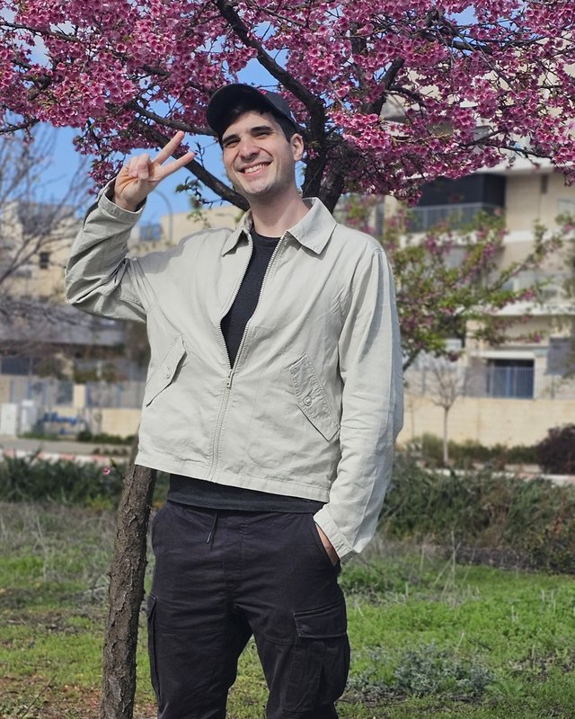

Go · Rego2024 – now
IaC Risk Detection Tool
Scans Infrastructure-as-Code for unencrypted sub-resources and excessive permissions, with the rules written as Rego policies.
Available · Central Israel
I build |
Full-Stack, Mobile & Cloud developer with a B.Sc. in Computer Science. I architect event-driven systems on GCP, ship SwiftUI apps, and use AI with guardrails: models extract, code decides.

Pub/Sub → BigQuery SwiftUI + Firebase Go · Rego Claude · Gemini · GPT · GrokI'm a Computer Science graduate (B.Sc., The Open University of Israel) working as a Full-Stack & Mobile Developer at osApps. There I moved the core analytics pipeline from batch ETL to real-time event streaming on GCP, automated CI/CD across AWS and GCP, and built the APIs, mobile tools and AI systems around it.
I use AI heavily, but carefully. LLMs do the fuzzy work (extraction, translation, sentiment), and every number and decision stays in code I control. Before anything ships, findings are cross-checked by several models: Claude, Gemini, ChatGPT and Grok.
Outside work I do security research: prototype-pollution exploits, an IaC risk scanner in Go & Rego, and CTFs on picoCTF and TryHackMe.
Click any skill to see how deep it goes. Most of them open a live demo you can play with.
Small, working versions of things I've built in production or research. Everything runs client-side.
Hardware and software diagnostics, and OS patch management for Windows environments.
Tier-1 support for internal banking systems under strict security protocols. Managed Active Directory permissions with least-privilege access.
Scans Infrastructure-as-Code for unencrypted sub-resources and excessive permissions, with the rules written as Rego policies.
Demonstrated XSS and RCE through prototype pollution in Express/EJS environments, from an unsafe merge to template-engine gadgets.
Binary exploitation and web application security challenges.
Real-time motion detection and OCR, with fuzzy string matching to clean up noisy recognized text.
The Open University of Israel · Graduated Sep 2024
Open to full-stack, mobile, cloud and security-minded roles.